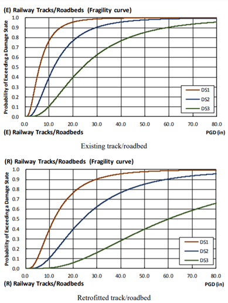
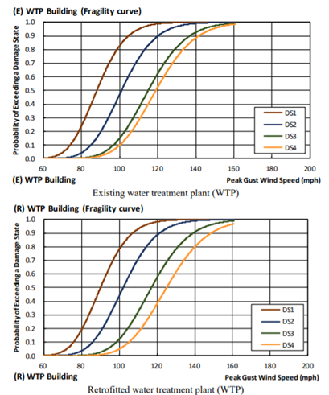
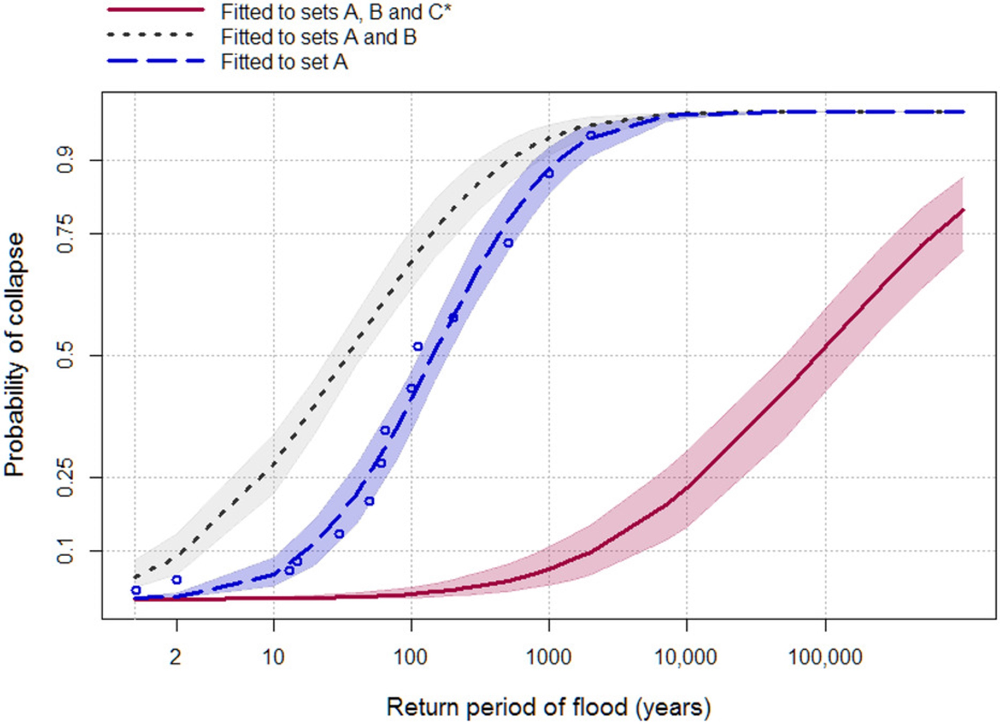
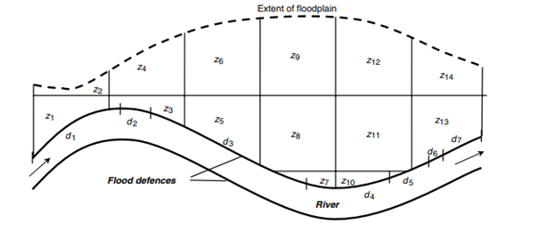
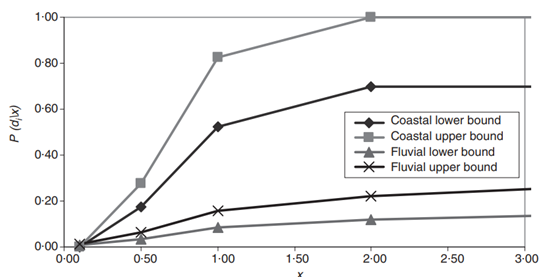

This mini-lecture discusses the concept of asset vulnerability, how asset vulnerability can be formulated through fragility curves and the applications of fragility curves for determining the risk of asset failure.
In the previous mini-lecture, the general concept of fragility and vulnerability functions was introduced. Here we discuss some real-world examples of fragility curves. In the literature, the most common hazards for which such curves are created are earthquakes, cyclones and floods. In this mini-lecture, we explain these curves for each type of hazard.
Seismic activity poses a significant risk to infrastructure. The main measure for earthquake severity is Peak Ground Acceleration (PGA). There is a lot of work on fragility analysis for earthquakes, which is used to quantify the probability of failure or damage for a given load.
By comparing the probability of failure between assets with and without protective works, one can compare the costs and benefits of protective works.
Figure 10.2.1 shows a set of fragility curves for different damage modes for railway bridge piers. The fragility curves are based on earthquake fragility functions for railway tracks/roadbeds in the United States, provided by FEMA (2013a). Damage modes describe the extent of damage, with DS1 representing relatively minor damages and DS4 representing complete asset failure.
Each plot compares the fragility curves for piers with (bottom) and without (top) retrofitting. It can be seen that retrofitted tracks are less likely to exceed each damage state for a given seismic load.

Figure 10.2.1: Seismic fragility functions for railway tracks/roadbeds (World Bank 2019; FEMA 2013a).
Cyclones also impose a heavy burden on infrastructure, for which wind speed is the main measure of hazard severity.
As for Figure 10.2.1, Figure 10.2.2 shows a set of fragility curves for different damage modes, but this time for water treatment plants (WTP). The fragility curves are based on wind fragility functions for buildings similar to WTP building in the United States, provided by FEMA (2013b). Note that in the absence of actual data on the fragility of WTP assets, buildings that are considered to be suitable proxies for WTP buildings are used.
By comparing the top versus bottom plot, it can be deduced that retrofitting the plant – for example, by improving the strength and resilience of roof-wall connections - is highly effective for reducing the likelihood of the DS4, or complete asset failure.

Figure 10.2.2: Cyclone fragility functions for water treatment plants (World Bank 2019; FEMA 2013b).
For flood hazards, flood extent return period maps and flood inundation depth are the main measures of severity.
Figure 10.2.3 shows the likelihood of bridge collapse as a function of flood return periods (Lamb et al. 2019) based on historical datasets. In contrast to the previous two examples, Lamb et al. (2019) explore how the fragility function output varies when considering different subsets of historical data: (A) historical bridge failures with associated flood event return periods; (B) historical bridge failures associated with an unknown flood return period; and (C) bridges that are assumed not to have failed.
The dark blue curve is fitted to set A. The light grey curve is fitted to sets A and B. As evident, the grey curve illustrates that failure probabilities increase compared to the dark blue curve when the additional failure observations in set B are introduced, but the dispersion also increases, reflecting uncertainty about the severity of flood events experienced at those bridges. The red curve is fitted to sets A, B, and C. Accounting for bridges that have not failed indicates a much greater resilience than the curves fitted to the failure observations alone. The shaded areas around each curve communicates the uncertainty associated with the 95% confidence interval of the Maximum Likelihood Estimate probability distribution.

Figure 10.2.3: The three curves show the different outcomes for calculating the likelihood of failure when considering different datasets: (A) historical bridge failures with associated flood event return periods; (B) historical bridge failures associated with an unknown flood return period; and (C) bridges that are assumed not to have failed (Lamb et al. 2019)
The aforementioned examples make use of fragility curves to quantify the likelihood of single asset failure. In the case where an extreme event impacts multiple assets at once, it may be useful to consider the likelihood of multiple asset failures. A flood defence structure provides a clear example where it would be useful to consider possible instances of multiple failures. The following example is taken from (Hall et al. 2003).
A flood defence structure can be thought of as being made-up of \(n\) sections, \(d_{1},d_{2},\ldots d_{n}\). The multiple sections of the defence structure will be affected simultaneously by an extreme event. Different instances of single or multiple sections breaching would have difference consequences in terms of which zones would flood. Figure 10.2.4 illustrates a flood defence structure along a river and flood impact zones, labelled \(z_{1},z_{2},\ldots z_{m}\).

Figure 10.2.4: Illustration of a flood defence system and flood impact zones (Hall et al. 2003)
Different flood impacts would result from different sections of the flood defence failing, individually or in combination. Therefore, in this instance, it would be important to consider the probability of single and multiple sections of failing at once to understand the likely extent of flooding.
As discussed, the probability of failure can be described using fragility curves, see Figure 10.2.5, where the conditional probability of failure event \(D_{i}\) is provided for a given set of loads \(x\).
\[1)\ P\left( D_{i} \right) = \ \int_{0}^{\infty}{p\left( x \right)\text{\ P}\left( D_{i} \middle| x \right)\text{\ dx}}\]

Figure 10.2.5: Overtopping fragility curve used in national flood risk assessment (fluvial and sea defence) (Hall et al. 2003)
Thus, the probability of multiple sections failing can be given as:
\[2)\ P\left( D_{1} \cap \ D_{2}|x \right) = \ P\left( D_{1} \middle| x \right) \times \ P\left( D_{2} \middle| x \right)\]
The following mini-lectures 10.3 and 10.4 explore the phenomenon of widespread losses incurred by hazards that affect a large area at once, and the implications of this for aggregating asset-level risks at scale.
This mini-lecture explored the applications of fragility curves for analysing asset vulnerability to different kinds of hazards. It also briefly discussed how such vulnerability assessments can be used to assess the likelihood of multiple asset failures. You should now be able to employ fragility curves for quantifying the likelihood of infrastructure failures under different hazard loading scenarios.